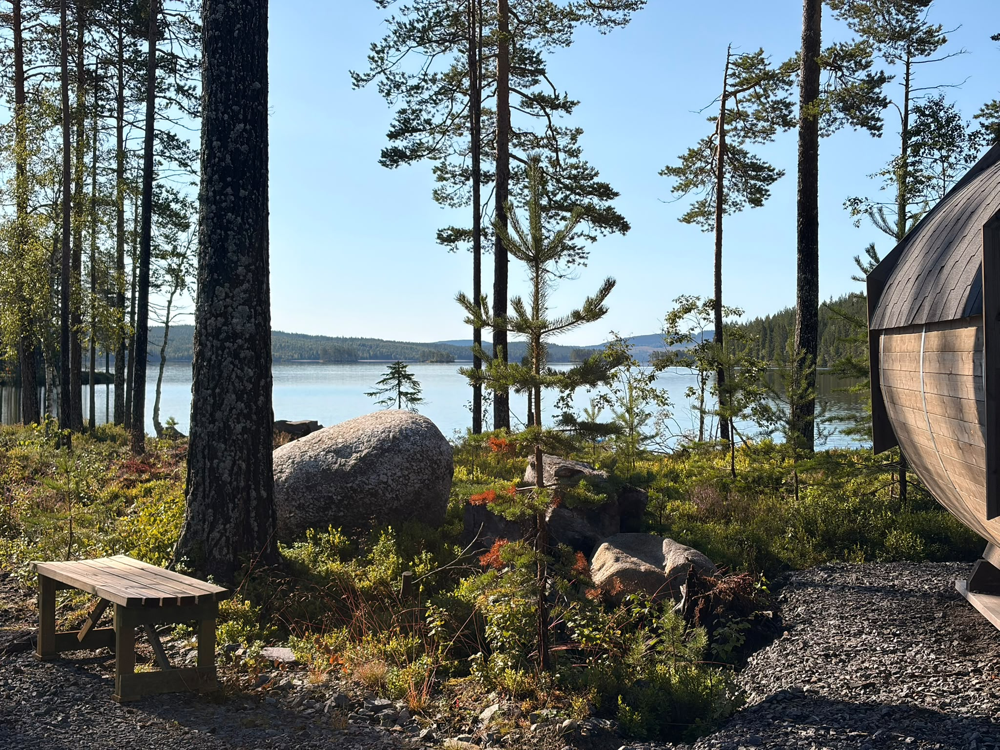
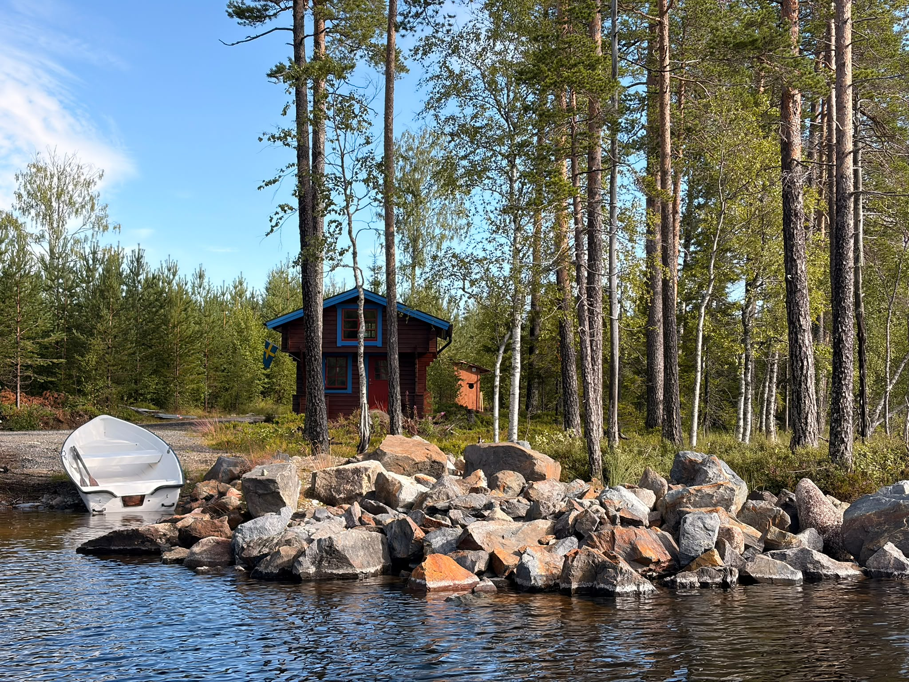
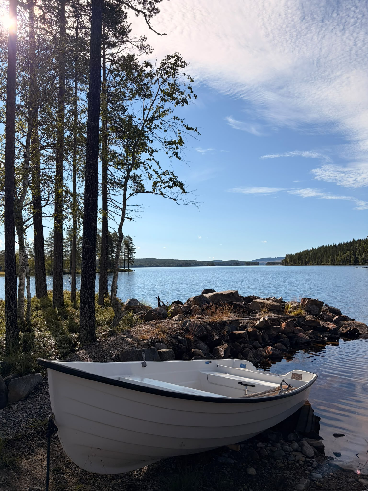
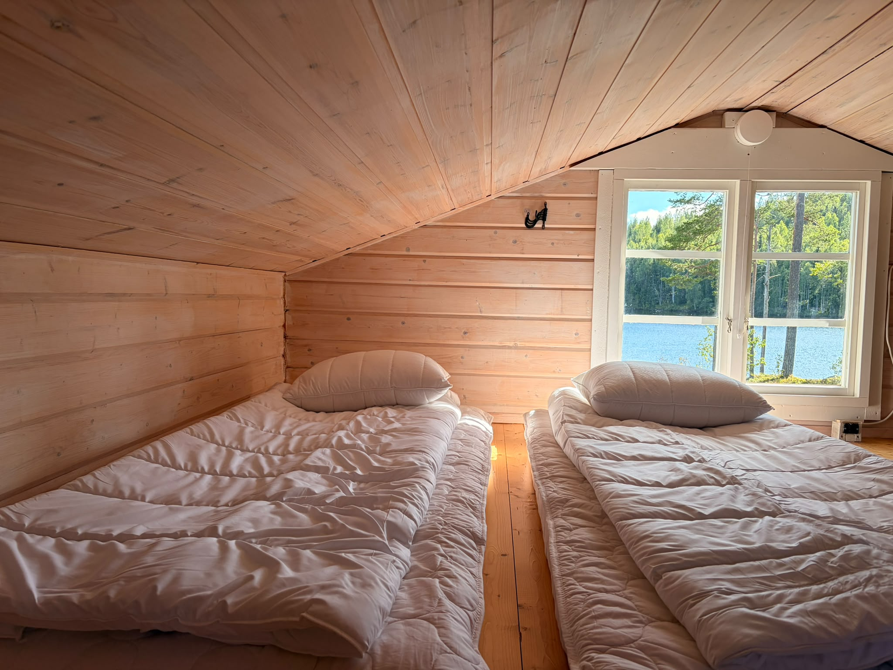
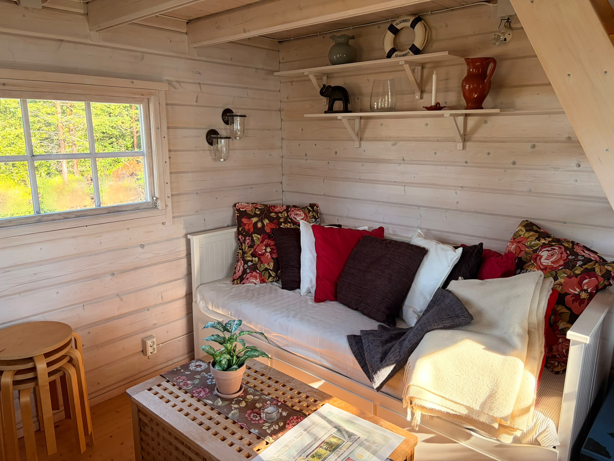
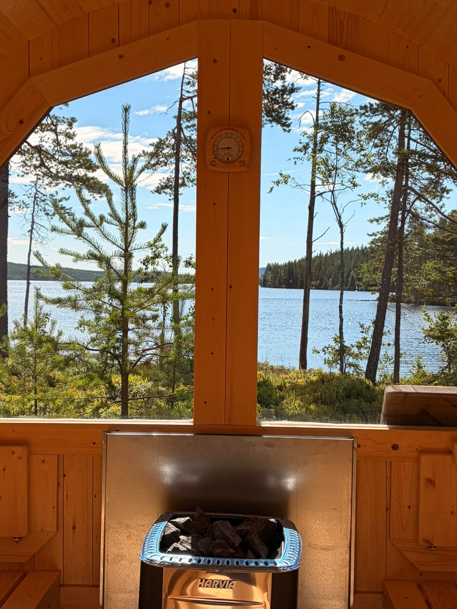
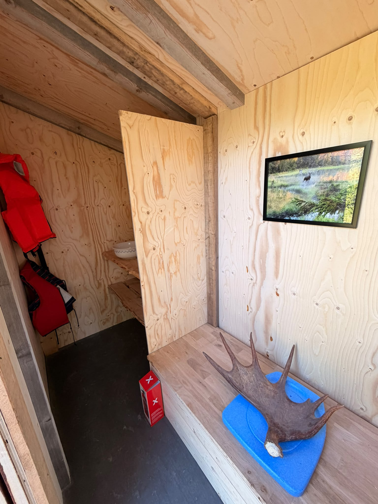

Off-grid stuga för upp till 4 gäster, i en egen vik utan grannar. Ta en bastu med utsikt, ta ut båten och koppla bort omvärlden.
Vedeldad bastu nere vid vattnet, med utsikt över sjön.
Vid stugan finns en båt för fiske.
Mitt i norrlands skogar, utan grannar i närheten.
Riktig natur, riktigt boende. Här är Herbret som det faktiskt ser ut. Se filmen från omgivningen →

Stugan ligger i en egen vik utan grannar, mitt i norrlands skogar mellan Örnsköldsvik och Sollefteå. Här bor du med upp till 4 gäster, med bäddsoffa på nedervåningen och ett loft med madrasser. Köket har gasolspis och kyl, och stugan värms med gasol. Nere vid vattnet finns en vedeldad bastu med utsikt och en båt för fiske.

Mitt i norrlands skogar, i egen vik utan grannar.


Nedervåningen har en bäddsoffa med två sovplatser, och uppe i loftet ligger madrasser.


Vid vattnet finns en vedeldad bastu med utsikt över sjön. Nära stugan ligger ett nybyggt förråd och dass.
Ta båten från Herbret ut på Stor-Degersjön, en bergig sjö med många öar. Det finns gott om platser att fiska från, och öarna går att utforska med båt.
📍 Stor-DegersjönEn av Norrlands dolda pärlor — dramatisk fjällterräng och fantastiska vyer, alldeles nära stugan. Perfekt dagsutflykt för den som vill ut på ordentliga stigar.
📍 Nätra, Västernorrland Läs mer → UtsiktFölj Ormvägen upp mot Hästbacken för en fin utsiktsplats i det närmaste naturområdet. En lättgången promenad som belönas med storslagen vy.
📍 Nära stugan Se karta → PromenadStarta från Hinnsjövägen och följ vägen ned till det lugna Stor-Degersjön. En avslappnad naturpromenad för hela familjen med fin sjöutsikt.
📍 Från Hinnsjövägen Se karta →Vägbeskrivning